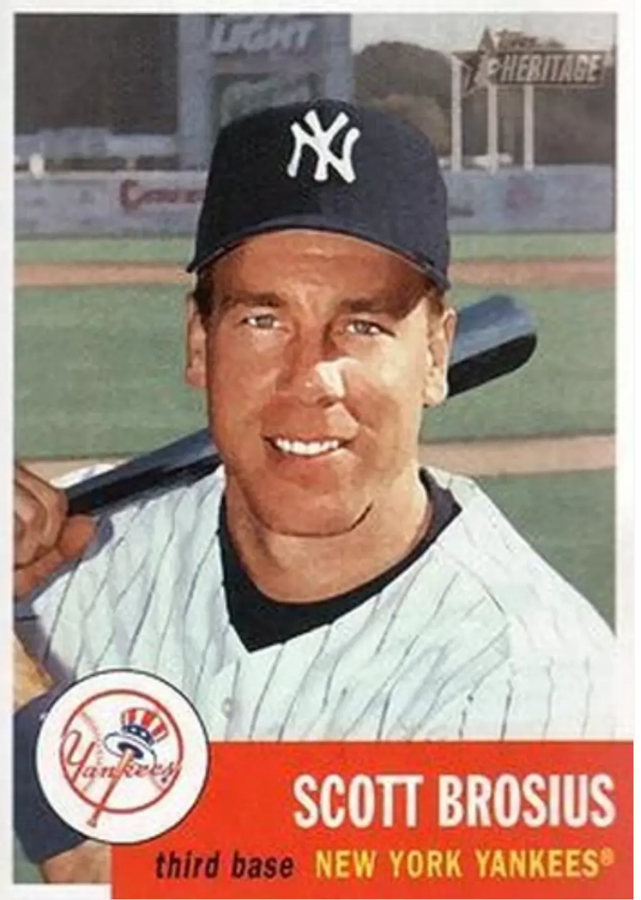

Scott Brosius
Career Highlights & Facts
(Facts are AI-generated and may require verification)
- Earned the Most Valuable Player award for a championship series.
- Secured a defensive excellence award at the hot corner.
- Selected as an All-Star representative during a career-best defensive season.
Would you like to find out more about Scott Brosius?
Player Biography
Scott Brosius
January 4, 2012
/
in
BioProject - Person
/
by
admin
This bio is not assigned. Want to write a SABR bio? Contact
bioproject@sabr.org
.
Full Name
Scott David Brosius
Born
August 15, 1966 at Hillsboro, OR (USA)
Tags
None
Wikipedia Summary:
Scott David Brosius is an American former professional baseball third baseman for the Oakland Athletics (1991–1997) and the New York Yankees (1998–2001) of Major League Baseball (MLB) who is the athletic director at Linfield University. He was an MLB All-Star in 1998 and won a Gold Glove Award in 1999. Brosius was a member of three consecutive World Series champions with the Yankees from 1998 to 2000 and won the World Series Most Valuable Player Award in 1998.
Career Totals
| WAR | AB | H | HR | BA | R | RBI | SB | OBP | SLG | OPS | OPS+ |
|---|---|---|---|---|---|---|---|---|---|---|---|
| 15.7 | 3889 | 1001 | 141 | .257 | 544 | 531 | 57 | .323 | .422 | .744 | 94 |
Statistics via Baseball-Reference.com
The Original Clue